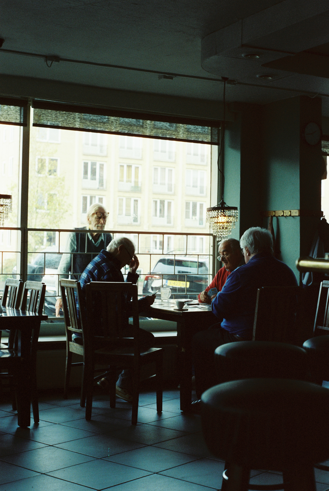
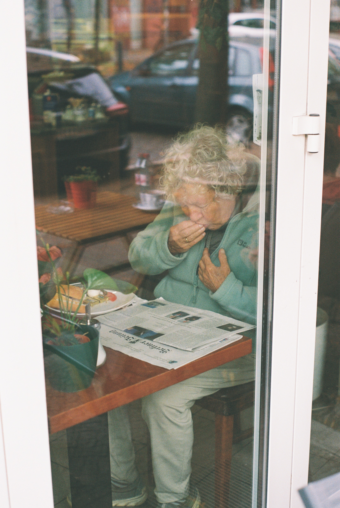

Coral Fustero-Torre is a computational biologist whose work focuses on revealing hidden molecular mechanisms within complex cellular systems using data-driven approaches and single-cell sequencing technologies.
Selected Research Areas
- • Single-cell sequencing analysis & pipeline development
- • Data-driven approaches to cellular complexity
- • Computational modeling of molecular dynamics
- • Development of tailored bioinformatics tools (Beyondcell, Bollito)
Selected Publications
- Beyondcell: targeting cancer therapeutic heterogeneity in single-cell RNA-seq data. Genome Medicine, 2021.
- Bollito: a flexible pipeline for comprehensive single-cell RNA-seq analyses. Bioinformatics, 2022.
- Genomic and immune landscape of metastatic pheochromocytoma and paraganglioma. Nature Communications, 2023.
- Type I interferon signaling pathway enhances immune-checkpoint inhibition in KRAS mutant lung tumors. 2024.
- Resolving intra-tumor heterogeneity and clonal evolution of CBF-AML. Experimental Hematology and Oncology, 2025.
Visual Work & Collages


